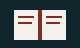
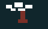

liyigarden
Role. I write and keep the blog.
Outcome. A plain site for notes on games, tools, and the garden. Lii is a character from a school-day story, and the blog is the place that story now lives.

Role. I write and keep the blog.
Outcome. A plain site for notes on games, tools, and the garden. Lii is a character from a school-day story, and the blog is the place that story now lives.

Outside the sealed palace is a butterfly garden. The world is already dark: no birds, no voices. Lii wakes there, follows a white butterfly, and finds the garden people used to visit. Night-glow plants mark the path. Souls still sit in the pavilion and remember it.
Role. I wrote the story and the garden.
Outcome. The opening of 蝶: the palace, the guardian butterfly, and the garden beyond the gate.
I don't have third project yet.